Diagnóstico
Olhamos o que já existe: site, Google, redes, anúncios, atendimento. O que funciona, o que está parado e o que está desconectado.

Site, loja virtual, SEO local, tráfego pago e automações planejados como uma peça só, e ajustados todo mês com você.
A maioria das empresas tem peças soltas: um site que ninguém atualiza, anúncios que ninguém mede, um WhatsApp que responde tarde. A ZENIT junta essas peças numa estrutura só, e volta todo mês para ajustar a direção.
Contrate uma frente ou a estrutura inteira. Abra cada uma para ver o que entra.
O problema Quem procura pelo seu serviço na sua cidade encontra o concorrente primeiro.
O problema Muito clique, pouco contato, e ninguém sabe quanto custou cada cliente.
O problema O site existe, mas é lento, não abre bem no celular e não leva ninguém a falar com você.
O problema O anúncio leva para uma página que fala de tudo e não pede nada.
O problema As vendas dependem de responder cada cliente na mão, um por um.
O problema O contato chega fora do horário e ninguém responde a tempo.
Quatro etapas. A última não termina.
Todo mês você recebe um resumo curto, sem jargão. É assim que a estrutura deixa de ser um projeto e vira direção.
O que mudamos Pausamos o anúncio de menor retorno e reforçamos a busca local.
Próximo passo Página de serviço nova para o bairro com mais procura.
Não. O diagnóstico mostra por onde começar. Dá para começar com uma frente e ir somando.
Você conta um pouco da empresa pelo formulário ou pelo WhatsApp, analisamos sua presença digital atual e apresentamos o que faríamos primeiro. Sem custo e sem compromisso.
Não. A gestão é cobrada à parte e o investimento em mídia é pago direto ao Google e à Meta, com total transparência.
O anúncio traz contato logo, mas para quando a verba para. O SEO demora mais e continua trazendo contato depois. Na maioria dos casos os dois andam juntos; o diagnóstico diz qual vem primeiro.
Sim. O trabalho é remoto, com reuniões por vídeo e aprovações online.
Conte um pouco sobre a empresa. Respondemos pelo WhatsApp com os próximos passos.